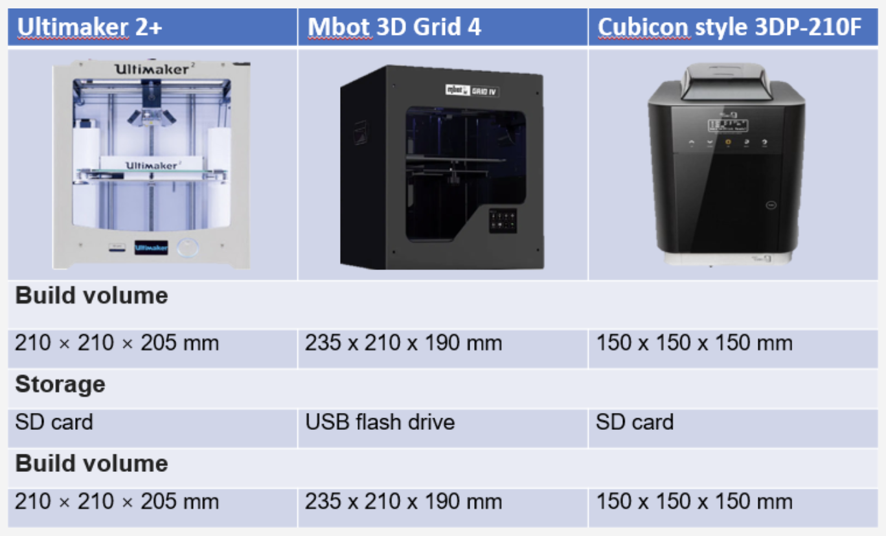
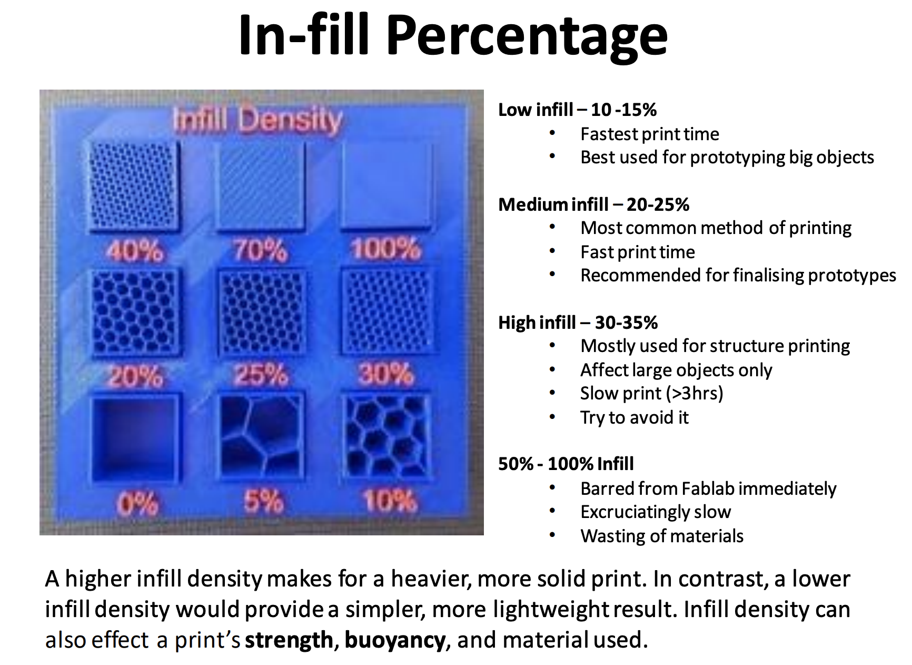
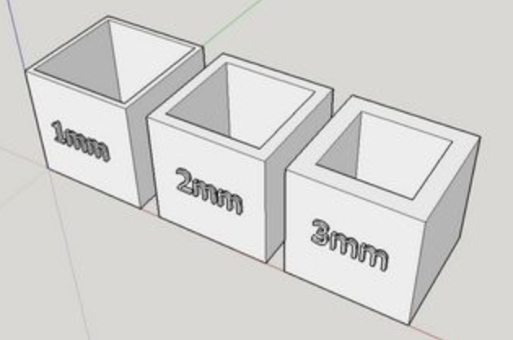
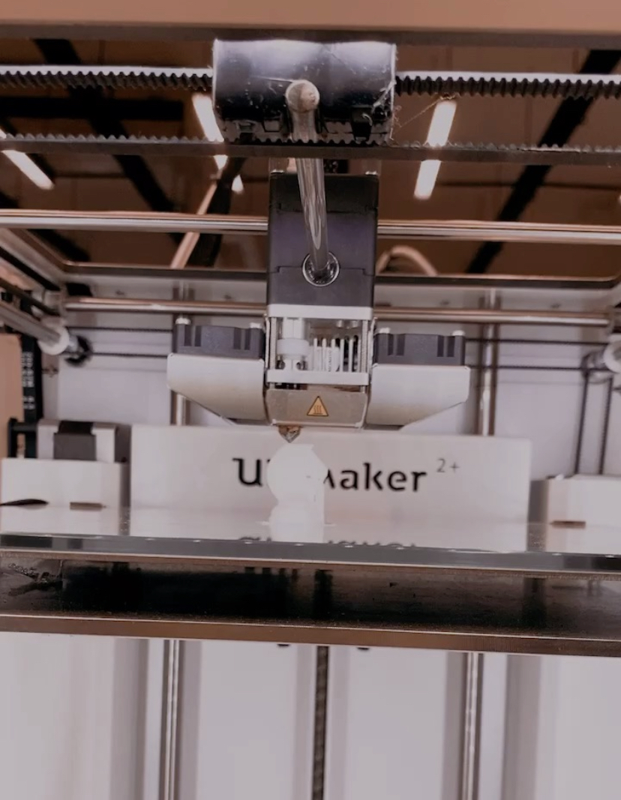
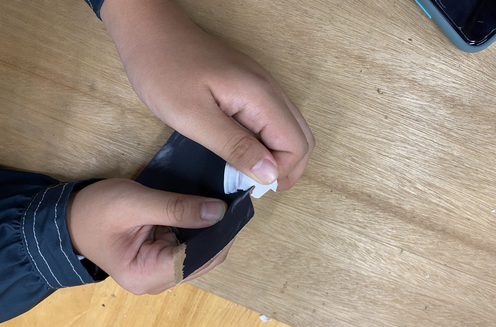
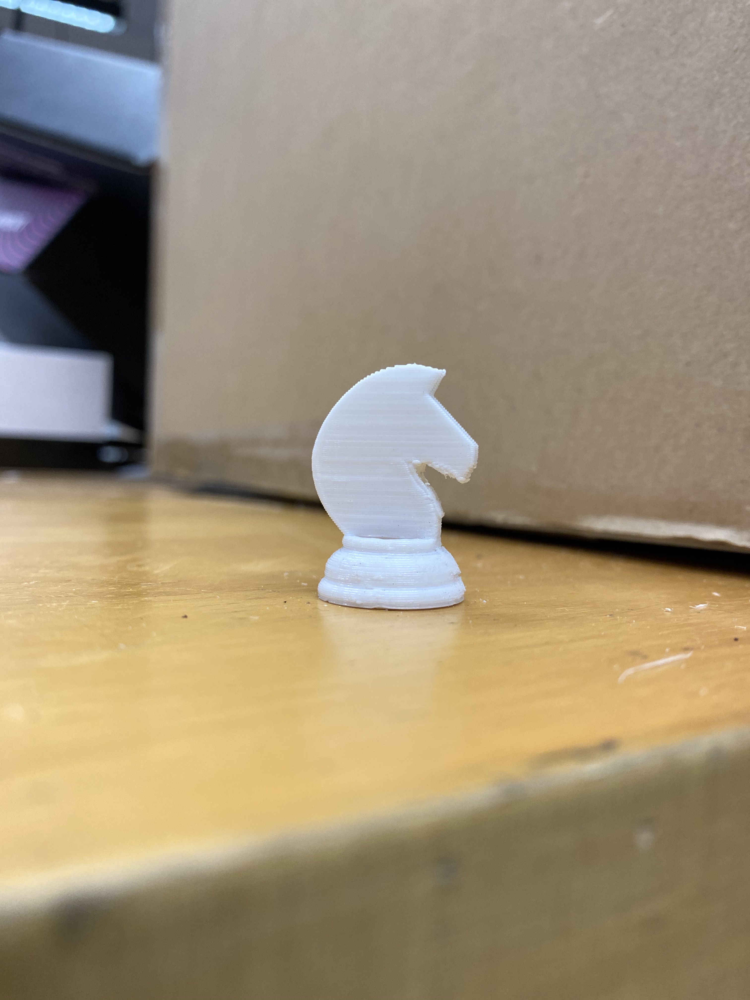

3D Printing
3D Printing is the construction of a three-dimensional object from a digital model. It is best for rapid prototyping such as for mockups for clients, planning a product, displaying and interacting with an idea, the list goes on.
Several materials a 3D printer uses are:
FFF (Fused Filament Fabrication) = filament is heated and deposited layer by layer
SLS (Selective Layer Sintering) = makes use of a laser to fuse powdered material at different points of the structure/model
SLA (Stereolithography) = goes through a photochemical process - light is used to harden each layer
Different materials will affect print speeds, stength, accuracy, etc.
1. Ultimaker Cura
Ultimaker Cura is an open source slicing application for 3D printers. It is free to download to use. It will allow us to slice (in a sense, render) designs in Fusion 360 to get it printed. There are other softwares that allow us to do the same thing such as...
Meshmixer.
Repetier-Host.
Tinkercad.
Blender.
OctoPrint.
Onshape.
Simplify3D.
However we use Ultimaker Cura due to the 3D printers we have in FabLab (Ultimaker models).
2. 3d Printers
These are the models available in SP.

3. Things to consider in a 3D print (not exhaustive)
1. infills.
There are different files that are compatible. First, you need to convert from CAD design to STL file. This is after making your CAD object to a 3D print. (under Tools>Make>3D print)
2. wall thickness.
The finer the print is and the thinner the layers, the longer it will take to print. These are the common thicknesses.

3. support structures
Support structures are additional removable 3D parts to support 'floating' parts of the print.
As you can see, the circled areas below are supports. This is printed during the printing process particularly to support suspended areas of a 3D print.
4. 3D printing a chess piece
This is my gcode file, you can download/look at it here.
I didn't manage to get a picture of it in Ulitmaker Cura, but I basically opened this file in the Ultimaker Cura to slice it.
Make sure to slice it under the RIGHT 3D printer (not doing so will cause errors and issues). The school has many 3D printers, but the one we mostly use for this elective is Ultimaker 2+.

The picture above is the gcode imported in but with an error. Unfortunately, I do not have a picture of when I manafed to fix it. However, Inside Cura you should...
1. Adjust settings found on the top right hand corner
2. The settings I used were Infill Density: 5%, Layer Height: 0.25mm, Wall Thickness: 1.5mm, skirt and support.
3. Slice the project and get a timing. My project took 17 minutes to print.

This is the print towards the end of it's print. I made sure to standby at the beginning and check in in the middle here and there. It is important to do so to make sure all is going well with the print.

After this was printed, I removed the support and sanded down the rough parts the support left behind.

This is the final print.